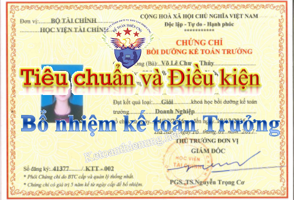

Các điều kiện và tiêu chuẩn bổ nhiệm kế toán trưởng Công ty, Doanh nghiệp. Những người không được làm kế toán theo Nghị định 174/2016/NĐ-CP của Chính phủ và Luật kế toán số 88/2015/QH13, cụ thể như sau:
I. Những người không được làm kế toán:
Theo điều 19 Nghị định 174/2016/NĐ-CP của Chính phủ và Luật kế toán số 88/2015/QH13
1. Người chưa thành niên; người bị Tòa án tuyên bố hạn chế hoặc mất năng lực hành vi dân sự; người đang phải chấp hành biện pháp đưa vào cơ sở giáo dục bắt buộc, cơ sở cai nghiện bắt buộc.
2. Người đang bị cấm hành nghề kế toán theo bản án hoặc quyết định của Tòa án đã có hiệu lực pháp luật; người đang bị truy cứu trách nhiệm hình sự; người đang phải chấp hành hình phạt tù hoặc đã bị kết án về một trong các tội xâm phạm trật tự quản lý kinh tế, tội phạm về chức vụ liên quan đến tài chính, kế toán mà chưa được xóa án tích.
3. Cha đẻ, mẹ đẻ, cha nuôi, mẹ nuôi, vợ, chồng, con đẻ, con nuôi, anh, chị, em ruột của người đại diện theo pháp Luật, của người đứng đầu, của giám đốc hoặc tổng giám đốc và của cấp phó của người đứng đầu, phó giám đốc hoặc phó tổng giám đốc phụ trách công tác tài chính - kế toán, kế toán trưởng trong cùng một đơn vị kế toán, trừ doanh nghiệp tư nhân, công ty trách nhiệm hữu hạn do một cá nhân làm chủ sở hữu, doanh nghiệp thuộc loại hình khác không có vốn nhà nước và là doanh nghiệp siêu nhỏ theo quy định của pháp Luật về hỗ trợ doanh nghiệp nhỏ và vừa.
4. Người đang làm quản lý, Điều hành, thủ kho, thủ quỹ, người được giao nhiệm vụ thường xuyên mua, bán tài sản trong cùng một đơn vị kế toán, trừ trường hợp trong cùng doanh nghiệp tư nhân, công ty trách nhiệm hữu hạn do một cá nhân làm chủ sở hữu và các doanh nghiệp thuộc loại hình khác không có vốn nhà nước và là doanh nghiệp siêu nhỏ theo quy định của pháp Luật về hỗ trợ doanh nghiệp nhỏ và vừa.
II. Quy định Kế toán trưởng, phụ trách kế toán:
Theo điều 20 Nghị định 174/2016/NĐ-CP của Chính phủ và Luật kế toán số 88/2015/QH13
1. Đơn vị kế toán phải bố trí kế toán trưởng. Trường hợp đơn vị chưa bổ nhiệm được ngay kế toán trưởng thì bố trí người phụ trách kế toán hoặc thuê dịch vụ làm kế toán trưởng theo quy định. Thời gian bố trí người phụ trách kế toán tối đa là 12 tháng, sau thời gian này đơn vị kế toán phải bố trí người làm kế toán trưởng.
2. Phụ trách kế toán:
a) Các đơn vị kế toán trong lĩnh vực nhà nước bao gồm: Đơn vị kế toán chỉ có một người làm kế toán hoặc một người làm kế toán kiêm nhiệm; đơn vị kế toán ngân sách và tài chính xã, phường, thị trấn thì không thực hiện bổ nhiệm kế toán trưởng mà chỉ bổ nhiệm phụ trách kế toán.
b) Các doanh nghiệp siêu nhỏ theo quy định của pháp Luật về hỗ trợ doanh nghiệp nhỏ và vừa được bố trí phụ trách kế toán mà không bắt buộc phải bố trí kế toán trưởng.
3. Thời hạn bổ nhiệm kế toán trưởng của các đơn vị kế toán trong lĩnh vực kế toán nhà nước, thời hạn bổ nhiệm phụ trách kế toán của các đơn vị quy định tại điểm a khoản 2 Điều này là 5 năm sau đó phải thực hiện các quy trình về bổ nhiệm lại kế toán trưởng, phụ trách kế toán.
4. Khi thay đổi kế toán trưởng, phụ trách kế toán, người đại diện theo pháp Luật của đơn vị kế toán hoặc người quản lý, Điều hành đơn vị kế toán phải tổ chức bàn giao công việc và tài liệu kế toán giữa kế toán trưởng, phụ trách kế toán cũ và kế toán trưởng, phụ trách kế toán mới, đồng thời thông báo cho các bộ phận có liên quan trong đơn vị và cho các cơ quan nơi đơn vị mở tài khoản giao dịch biết họ tên và mẫu chữ ký của kế toán trưởng, phụ trách kế toán mới. Kế toán trưởng, phụ trách kế toán mới chịu trách nhiệm về công việc kế toán của mình kể từ ngày nhận bàn giao công việc. Kế toán trưởng, phụ trách kế toán cũ vẫn phải chịu trách nhiệm về công việc kế toán trong thời gian mình phụ trách.
III. Tiêu chuẩn và Điều kiện bổ nhiệm kế toán trưởng, phụ trách kế toán
Theo điều 21 Nghị định 174/2016/NĐ-CP của Chính phủ và Luật kế toán số 88/2015/QH13
1. Kế toán trưởng, phụ trách kế toán phải có các tiêu chuẩn quy định tại điểm a, c, d khoản 1 Điều 54 Luật kế toán và không thuộc các trường hợp không được làm kế toán theo quy định tại Điều 19 Nghị định 174. Bộ Tài chính quy định về việc tổ chức, bồi dưỡng và cấp chứng chỉ kế toán trưởng, cụ thể như sau:
Theo điểm a, c, d khoản 1 Điều 54 Luật kế toán, cụ thể như sau:
“ Kế toán trưởng phải có các tiêu chuẩn và điều kiện sau đây:
a) Có phẩm chất đạo đức nghề nghiệp, trung thực, liêm khiết, có ý thức chấp hành pháp luật;
b) Có trình độ chuyên môn, nghiệp vụ về kế toán.
c) Có chuyên môn, nghiệp vụ về kế toán từ trình độ trung cấp trở lên.
c) Có chứng chỉ bồi dưỡng kế toán trưởng;
d) Có thời gian công tác thực tế về kế toán ít nhất là 02 năm đối với người có chuyên môn, nghiệp vụ về kế toán từ trình độ đại học trở lên
- Có thời gian công tác thực tế về kế toán ít nhất là 03 năm đối với người có chuyên môn, nghiệp vụ về kế toán trình độ trung cấp, cao đẳng.”
Điều kiện: “Không thuộc các trường hợp không được làm kế toán theo quy định tại Điều 19 Nghị định 174” -> Các bạn xem trên phần I bên trên nhé.
Xem thêm: Mẫu quyết định bổ nhiệm kế toán trưởng
2. Kế toán trưởng, phụ trách kế toán của các đơn vị kế toán sau đây phải có chuyên môn nghiệp vụ về kế toán từ trình độ đại học trở lên, bao gồm:
a) Cơ quan có nhiệm vụ thu chi ngân sách nhà nước các cấp;
b) Bộ, cơ quan ngang bộ, cơ quan thuộc Chính phủ, cơ quan thuộc Quốc hội, cơ quan khác của nhà nước ở trung ương và các đơn vị kế toán trực thuộc các cơ quan này;
c) Đơn vị sự nghiệp công lập thuộc các bộ, cơ quan ngang bộ, cơ quan thuộc Chính phủ, cơ quan khác ở trung ương, Ủy ban nhân dân cấp tỉnh;
d) Cơ quan chuyên môn trực thuộc Ủy ban nhân dân cấp tỉnh và tương đương; các cơ quan quản lý nhà nước trực thuộc các cơ quan này;
đ) Cơ quan trung ương tổ chức theo ngành dọc đặt tại tỉnh;
e) Tổ chức chính trị, tổ chức chính trị - xã hội, tổ chức chính trị - xã hội - nghề nghiệp, tổ chức xã hội, tổ chức xã hội - nghề nghiệp ở cấp trung ương, cấp tỉnh có sử dụng ngân sách nhà nước;
g) Ban quản lý dự án đầu tư có tổ chức bộ máy kế toán riêng, có sử dụng ngân sách nhà nước thuộc dự án nhóm A và dự án quan trọng quốc gia;
h) Đơn vị dự toán cấp 1 thuộc ngân sách cấp huyện;
i) Doanh nghiệp được thành lập và hoạt động theo pháp Luật Việt Nam trừ trường hợp quy định tại điểm g khoản 3 Điều này;
k) Hợp tác xã, liên hiệp hợp tác xã có vốn Điều lệ từ 10 tỷ đồng trở lên;
l) Chi nhánh doanh nghiệp nước ngoài hoạt động tại Việt Nam.
3. Kế toán trưởng, phụ trách kế toán của các đơn vị kế toán sau đây phải có chuyên môn nghiệp vụ về kế toán từ trình độ trung cấp chuyên nghiệp trở lên, bao gồm:
a) Cơ quan chuyên môn trực thuộc Ủy ban nhân dân cấp huyện có tổ chức bộ máy kế toán (trừ các đơn vị dự toán cấp 1 thuộc ngân sách cấp huyện);
b) Cơ quan trung ương tổ chức theo ngành dọc đặt tại cấp huyện, cơ quan của tỉnh đặt tại cấp huyện;
c) Tổ chức chính trị, tổ chức chính trị - xã hội, tổ chức chính trị - xã hội - nghề nghiệp, tổ chức xã hội, tổ chức xã hội - nghề nghiệp ở cấp huyện có sử dụng ngân sách nhà nước;
d) Ban quản lý dự án đầu tư có tổ chức bộ máy kế toán riêng, có sử dụng ngân sách nhà nước trừ các trường hợp quy định tại điểm g khoản 2 Điều này;
đ) Đơn vị kế toán ngân sách và tài chính xã, phường, thị trấn;
e) Đơn vị sự nghiệp công lập ngoài các đơn vị quy định tại điểm c khoản 2 Điều này;
g) Doanh nghiệp được thành lập và hoạt động theo pháp Luật Việt Nam không có vốn nhà nước, có vốn Điều lệ nhỏ hơn 10 tỷ đồng;
h) Hợp tác xã, liên hiệp hợp tác xã có vốn Điều lệ nhỏ hơn 10 tỷ đồng.
4. Đối với các tổ chức, đơn vị khác ngoài các đối tượng quy định tại khoản 2 và khoản 3 Điều này, tiêu chuẩn về trình độ, chuyên môn nghiệp vụ của kế toán trưởng, phụ trách kế toán do người đại diện theo pháp Luật của đơn vị quyết định phù hợp với quy định của Luật kế toán và các quy định khác của pháp Luật liên quan.
5. Đối với kế toán trưởng, phụ trách kế toán của công ty mẹ là doanh nghiệp nhà nước hoặc là doanh nghiệp có vốn nhà nước chiếm trên 50% vốn Điều lệ phải có thời gian công tác thực tế về kế toán ít nhất là 05 năm.
IV. Tiêu chuẩn học viên tham dự khóa học bồi dưỡng kế toán trưởng
Theo điều 2 Thông tư 199/2011/TT-BTC ngày 30/12/2011 của Bộ tài chính
1. Người Việt Nam tham dự khoá học bồi dưỡng kế toán trưởng phải có các tiêu chuẩn sau đây:
a/ Có phẩm chất đạo đức nghề nghiệp, trung thực, liêm khiết, có ý thức chấp hành pháp luật;
b/ Có trình độ chuyên môn, nghiệp vụ về tài chính, kế toán, kiểm toán từ bậc trung cấp trở lên và có thời gian công tác thực tế về tài chính, kế toán, kiểm toán như sau:
- Tối thiểu là 2 năm trở lên kể từ ngày ghi trên bằng tốt nghiệp đại học chuyên ngành tài chính, kế toán, kiểm toán;
- Tối thiểu là 3 năm trở lên kể từ ngày ghi trên bằng tốt nghiệp trung cấp hoặc cao đẳng chuyên ngành tài chính, kế toán, kiểm toán;
c/ Có Đơn xin học, trong đó có xác nhận thời gian công tác thực tế về tài chính, kế toán, kiểm toán của cơ quan đang công tác, kèm theo bản sao có chứng thực Bằng tốt nghiệp chuyên ngành tài chính, kế toán, kiểm toán.
2. Người nước ngoài có Chứng chỉ chuyên gia kế toán, Chứng chỉ hành nghề kế toán, Chứng chỉ kiểm toán viên hoặc bằng tốt nghiệp đại học của các tổ chức nước ngoài (Được Bộ Tài chính Việt Nam thừa nhận) được tham dự khoá học bồi dưỡng kế toán trưởng do đơn vị đủ điều kiện tổ chức khoá học bồi dưỡng kế toán trưởng cho người nước ngoài.
V. Công việc, trách nhiệm và quyền của kế toán trưởng:
1. Kế toán trưởng là người đứng đầu bộ máy kế toán của đơn vị có nhiệm vụ tổ chức thực hiện công tác kế toán trong đơn vị kế toán.
2. Kế toán trưởng của cơ quan nhà nước, tổ chức, đơn vị sự nghiệp sử dụng ngân sách nhà nước và doanh nghiệp do Nhà nước nắm giữ trên 50% vốn điều lệ ngoài nhiệm vụ quy định tại khoản 1 Điều này còn có nhiệm vụ giúp người đại diện theo pháp luật của đơn vị kế toán giám sát tài chính tại đơn vị kế toán.
3. Kế toán trưởng chịu sự lãnh đạo của người đại diện theo pháp luật của đơn vị kế toán; trường hợp có đơn vị kế toán cấp trên thì đồng thời chịu sự chỉ đạo và kiểm tra của kế toán trưởng của đơn vị kế toán cấp trên về chuyên môn, nghiệp vụ.
4. Trường hợp đơn vị kế toán cử người phụ trách kế toán thay kế toán trưởng thì người phụ trách kế toán phải có các tiêu chuẩn, điều kiện quy định tại khoản 1 Điều 54 của Luật này và phải thực hiện trách nhiệm và quyền quy định cho kế toán trưởng quy định tại Điều 55 của Luật này.
Trách nhiệm và quyền của kế toán trưởng:
1. Kế toán trưởng có trách nhiệm sau đây:
a) Thực hiện các quy định của pháp luật về kế toán, tài chính trong đơn vị kế toán;
b) Tổ chức điều hành bộ máy kế toán theo quy định của Luật này;
c) Lập báo cáo tài chính tuân thủ chế độ kế toán và chuẩn mực kế toán.
2. Kế toán trưởng có quyền độc lập về chuyên môn, nghiệp vụ kế toán.
3. Kế toán trưởng của cơ quan nhà nước, tổ chức, đơn vị sự nghiệp sử dụng ngân sách nhà nước và doanh nghiệp do Nhà nước nắm giữ trên 50% vốn điều lệ, ngoài các quyền quy định tại khoản 2 Điều này còn có các quyền sau đây:
a) Có ý kiến bằng văn bản với người đại diện theo pháp luật của đơn vị kế toán về việc tuyển dụng, thuyên chuyển, tăng lương, khen thưởng, kỷ luật người làm kế toán, thủ kho, thủ quỹ;
b) Yêu cầu các bộ phận liên quan trong đơn vị kế toán cung cấp đầy đủ, kịp thời tài liệu liên quan đến công việc kế toán và giám sát tài chính của kế toán trưởng;
c) Bảo lưu ý kiến chuyên môn bằng văn bản khi có ý kiến khác với ý kiến của người ra quyết định;
d) Báo cáo bằng văn bản cho người đại diện theo pháp luật của đơn vị kế toán khi phát hiện hành vi vi phạm pháp luật về tài chính, kế toán trong đơn vị; trường hợp vẫn phải chấp hành quyết định thì báo cáo lên cấp trên trực tiếp của người đã ra quyết định hoặc cơ quan nhà nước có thẩm quyền và không phải chịu trách nhiệm về hậu quả của việc thi hành quyết định đó.
(Theo điều 53 và 55 Luật kế toán 88/2015/QH13)
Chúc các bạn thành công!
CÔNG TY TNHH TƯ VẤN & ĐÀO TẠO DIỆU TÂM
Chuyên dạy thực hành kế toán tổng hợp thực tế
------------------------------------ 